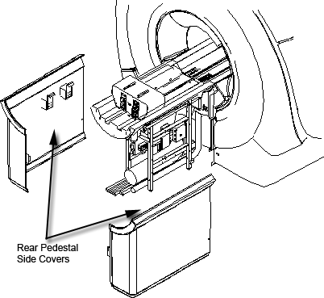
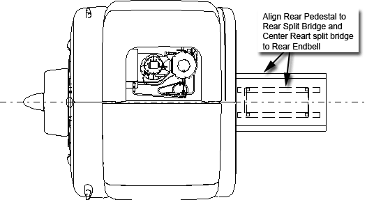
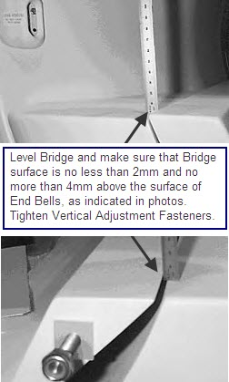

Operating Documentation
Direction 5440000, Rev# 5
Signa HDxt Service Methods
Module Version 6.0, Version Date 11/2/10
Operating Documentation |
| Required Persons | Preliminary Reqs | Procedure | Finalization |
|---|---|---|---|
| 3 | Not Applicable | 120 mins | Not Applicable |
This procedure is for the replacement or removal of the rear pedestal. The rear pedestal houses the longitudinal drive motor, which is considered highly ferrous material. Follow all safety precautions for the removal/movement of ferrous material in the Magnet Room.
| Item | Qty | Effectivity | Part# | Manufacturer | |
|---|---|---|---|---|---|
| 17 mm Wrench | 1 | - | - | - | |
| 5 mm Allen Wrench | 1 | - | - | - | |
| Phillips Screwdriver | 1 | - | - | - | |
| Flat-Blade Screwdriver | 1 | - | - | - | |
| ||||
| Personal injury and equipment damage! | ||||
| Strong Magnetic Field present. | ||||
| When servicing any magnetic equipment, it is critically
important that the service engineer consciously plan the path to be
taken when moving highly ferrous devices in the magnet environment.
the path should be as far from the magnet as practical and avoid high
flux density fields. Safety Requirements:
When planning a service path, it is critical that the path be clear and sufficiently wide. Ensure that there are no trip hazards, obstacles, clutter, slippery surfaces or other items even partially restricting the path. If there are portable obstacles in a path, remove them from the area and replace them after the service action is completed. It is required to walk the path prior to beginning service to ensure that there is sufficient space through which to pass for yourself and the object being serviced. |
| ||||
| Personal injury and equipment damage! | ||||
| Strong Magnetic Field present. | ||||
| since THIS PROCEDURE REQUIRES Movement OF highly FERROUS MATERIAL IN CLOSE PROXIMITY TO THE MAGNET, MULTIPLE Field engineers are required at all times. |
| ||||
| PERSONAL INJURY! | ||||
| THE REAR PEDESTAL IS A HEAVY OBJECT. | ||||
| ASSISTANCE, SUCH AS ADDITIONAL PERSONNEL, ARE REQUIRED TO LIFT THIS EQUIPMENT. |
Moving the pedestal away from the magnet is not only the first step in the rear pedestal removal/replacement procedure, it is also necessary for removal of the rear endbell.
Perform LOTO on the applicable PDU: PHOENIX Power Distribution Unit (Lockout/Tagout) or LOTO for Pen Panel, Patient Blower, and Magnet Room.
Lift and remove the rear pedestal side covers shown below.
Illustration 1: Access to Rear Pedestal

Remove the front portion of the split bridge as instructed in Bridge Removal and Replacement.
There are three sets of cables that connect the pedestal to the magnet:
Two RF Transmit Cables (blue cables that come from under the endbell)
Two Dynamic Disable Cables (brown cables that come from under the endbell)
Two Microphone Cables (serial that comes from below the magnet)
Make sure each cable is properly labeled, and then disconnect them from the pedestal.
Unbolt the pedestal mounting brackets from the rear endbell.
| ||||
| PERSONAL INJURY! | ||||
| THE DRIVE MOTOR LOCATED IN THE REAR PEDESTAL CONTAINS FERROUS MATERIAL. | ||||
|
Using three people, grasp the rear pedestal at the bars just below the bridge assembly. Slide the pedestal away from magnet and, if necessary, out of the Magnet Room.
| ||||
| There are dozens of wires attached to the rear pedestal. Before replacing the pedestal, make sure each individual wire is properly labeled so the transition from the old pedestal to the new one is as smooth as possible. | ||||
To unpack and install a new rear pedestal, follow the instructions in the Rear Pedestal Unpacking Procedure.
Perform the steps in Moving Rear Pedestal Away from Magnet in reverse order.
Verify the pedestal is aligned to the rear bridge and rear bridge is centered to rear endbell as illustrated below.
Illustration 2: Alignment Points

Verify that the bridge surface is flush to 1 mm below the rear endbell surfaces (shown below) before tightening the fasteners for the pedestal mounting brackets. If not, adjust accordingly.
Illustration 3: Surfaces Flush

No finalization steps.